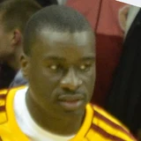
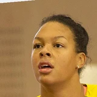
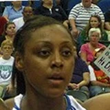
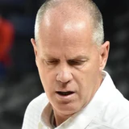
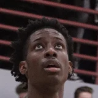
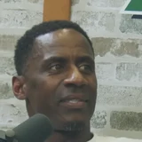

Photo credits
Player photos come from the NBA headshot set. Photos of coaches, executives and other people come from Wikimedia Commons under the licenses below (public domain, CC0, CC BY or CC BY-SA). Each one was cropped and resized to a head-and-shoulders circle; the cropped versions are shared under the same license as the original.
Wikimedia Commons photos
 A'ja WilsonJohn Mac · CC BY-SA 2.0 · Wikimedia Commons
A'ja WilsonJohn Mac · CC BY-SA 2.0 · Wikimedia Commons Ahmad RashadAnthony Collins · CC BY 2.0 · Wikimedia Commons
Ahmad RashadAnthony Collins · CC BY 2.0 · Wikimedia Commons Aleksander SekulicVyacheslav Bukharov · CC BY-SA 4.0 · Wikimedia Commons
Aleksander SekulicVyacheslav Bukharov · CC BY-SA 4.0 · Wikimedia Commons Alexander VolkovNews UTR · CC BY 3.0 · Wikimedia Commons
Alexander VolkovNews UTR · CC BY 3.0 · Wikimedia Commons Alexey ShvedVyacheslav Bukharov · CC BY-SA 4.0 · Wikimedia Commons
Alexey ShvedVyacheslav Bukharov · CC BY-SA 4.0 · Wikimedia Commons Andris BiedrinsKeith Allison from Owings Mills, USA · CC BY-SA 2.0 · Wikimedia Commons
Andris BiedrinsKeith Allison from Owings Mills, USA · CC BY-SA 2.0 · Wikimedia Commons Angel ReeseJohn Mac · CC BY-SA 2.0 · Wikimedia Commons
Angel ReeseJohn Mac · CC BY-SA 2.0 · Wikimedia Commons Antawn JamisonAll-Pro Reels from District of Columbia, USA · CC BY-SA 2.0 · Wikimedia Commons
Antawn JamisonAll-Pro Reels from District of Columbia, USA · CC BY-SA 2.0 · Wikimedia Commons Arik ShivekBotend · CC BY-SA 4.0 · Wikimedia Commons
Arik ShivekBotend · CC BY-SA 4.0 · Wikimedia Commons Arturs ZagarsZafer · CC BY 4.0 · Wikimedia Commons
Arturs ZagarsZafer · CC BY 4.0 · Wikimedia Commons Audie NorrisFCBQ · Public domain · Wikimedia Commons
Audie NorrisFCBQ · Public domain · Wikimedia Commons, CC BY-SA 3.0, via Wikimedia Commons") Bill WenningtonBill_Wennington.jpg : Jauerback derivative work: Amineshaker ( talk ) · CC BY-SA 3.0 · Wikimedia Commons
Bill WenningtonBill_Wennington.jpg : Jauerback derivative work: Amineshaker ( talk ) · CC BY-SA 3.0 · Wikimedia Commons Bob Myersnikk_la · CC BY 2.0 · Wikimedia Commons
Bob Myersnikk_la · CC BY 2.0 · Wikimedia Commons Bob WeissUnknown author Unknown author · Public domain · Wikimedia Commons
Bob WeissUnknown author Unknown author · Public domain · Wikimedia Commons Breanna StewartUser:Zafer · CC BY-SA 4.0 · Wikimedia Commons
Breanna StewartUser:Zafer · CC BY-SA 4.0 · Wikimedia Commons Brendan HaywoodKeith Allison from Baltimore, USA · CC BY-SA 2.0 · Wikimedia Commons
Brendan HaywoodKeith Allison from Baltimore, USA · CC BY-SA 2.0 · Wikimedia Commons Brian KeefeAll-Pro Reels · CC BY-SA 4.0 · Wikimedia Commons
Brian KeefeAll-Pro Reels · CC BY-SA 4.0 · Wikimedia Commons Bryce JamesMichael Kain · CC BY 2.0 · Wikimedia Commons
Bryce JamesMichael Kain · CC BY 2.0 · Wikimedia Commons Buzz PetersonThomsonmg2000 · CC0 · Wikimedia Commons
Buzz PetersonThomsonmg2000 · CC0 · Wikimedia Commons Caitlin ClarkJohn Mac · CC BY-SA 2.0 · Wikimedia Commons
Caitlin ClarkJohn Mac · CC BY-SA 2.0 · Wikimedia Commons Candace ParkerLorie Shaull · CC BY-SA 4.0 · Wikimedia Commons
Candace ParkerLorie Shaull · CC BY-SA 4.0 · Wikimedia Commons Carlos DelfinoKeith Allison from Owings Mills, USA · CC BY-SA 2.0 · Wikimedia Commons
Carlos DelfinoKeith Allison from Owings Mills, USA · CC BY-SA 2.0 · Wikimedia Commons Carlton CarringtonAll-Pro Reels · CC BY-SA 4.0 · Wikimedia Commons
Carlton CarringtonAll-Pro Reels · CC BY-SA 4.0 · Wikimedia Commons Cathy EngelbertJohn Mac · CC BY-SA 4.0 · Wikimedia Commons
Cathy EngelbertJohn Mac · CC BY-SA 4.0 · Wikimedia Commons Cheryl ReeveLorie Shaull · CC BY 2.0 · Wikimedia Commons
Cheryl ReeveLorie Shaull · CC BY 2.0 · Wikimedia Commons Chick HearnThe Pat McDermott Company · Public domain · Wikimedia Commons
Chick HearnThe Pat McDermott Company · Public domain · Wikimedia Commons, CC BY-SA 3.0, via Wikimedia Commons") Chot ReyesWayKurat (cropped from the original) · CC BY-SA 3.0 · Wikimedia Commons
Chot ReyesWayKurat (cropped from the original) · CC BY-SA 3.0 · Wikimedia Commons Christian LaettnerSteven Buyansky · CC BY 2.0 · Wikimedia Commons
Christian LaettnerSteven Buyansky · CC BY 2.0 · Wikimedia Commons Craig Sagerpvsbond · CC BY-SA 2.0 · Wikimedia Commons
Craig Sagerpvsbond · CC BY-SA 2.0 · Wikimedia Commons Danny AingeAaron Frutman · CC BY 2.0 · Wikimedia Commons
Danny AingeAaron Frutman · CC BY 2.0 · Wikimedia Commons Daryl MoreyMorbidthoughts · CC BY-SA 3.0 · Wikimedia Commons
Daryl MoreyMorbidthoughts · CC BY-SA 3.0 · Wikimedia Commons Delonte WestKeith Allison from Owings Mills, USA · CC BY-SA 2.0 · Wikimedia Commons
Delonte WestKeith Allison from Owings Mills, USA · CC BY-SA 2.0 · Wikimedia Commons Derek FisherKeith Allison · CC BY-SA 2.0 · Wikimedia Commons
Derek FisherKeith Allison · CC BY-SA 2.0 · Wikimedia Commons
DeSagana DiopErik Drost · CC BY 2.0 · Wikimedia Commons DeShawn StevensonKeith Allison · CC BY-SA 2.0 · Wikimedia Commons
DeShawn StevensonKeith Allison · CC BY-SA 2.0 · Wikimedia Commons Detlef Schrempflam_chihang derivative work: Shakeydeal33 · CC BY 2.0 · Wikimedia Commons
Detlef Schrempflam_chihang derivative work: Shakeydeal33 · CC BY 2.0 · Wikimedia Commons Devin EbanksBagumba · CC BY-SA 4.0 · Wikimedia Commons
Devin EbanksBagumba · CC BY-SA 4.0 · Wikimedia Commons Dimitris ItoudisZafer · CC BY-SA 4.0 · Wikimedia Commons
Dimitris ItoudisZafer · CC BY-SA 4.0 · Wikimedia Commons Doc RiversAll-Pro Reels · CC BY-SA 2.0 · Wikimedia Commons
Doc RiversAll-Pro Reels · CC BY-SA 2.0 · Wikimedia Commons Drazen PetrovicCavic = Steve Lipofsky · CC BY-SA 3.0 · Wikimedia Commons
Drazen PetrovicCavic = Steve Lipofsky · CC BY-SA 3.0 · Wikimedia Commons Dusty MayTonyTheTiger · CC0 · Wikimedia Commons
Dusty MayTonyTheTiger · CC0 · Wikimedia Commons Dwane CaseyFlickr editor David Herrera/dherrera_96 · CC BY 2.0 · Wikimedia Commons
Dwane CaseyFlickr editor David Herrera/dherrera_96 · CC BY 2.0 · Wikimedia Commons Eddie HouseKeith Allison from Baltimore, USA · CC BY-SA 2.0 · Wikimedia Commons
Eddie HouseKeith Allison from Baltimore, USA · CC BY-SA 2.0 · Wikimedia Commons Eduardo Najeradskciado · CC BY 2.0 · Wikimedia Commons
Eduardo Najeradskciado · CC BY 2.0 · Wikimedia Commons Elgin BaylorUnknown author Unknown author · Public domain · Wikimedia Commons
Elgin BaylorUnknown author Unknown author · Public domain · Wikimedia Commons Ergin AtamanZafer · CC BY 4.0 · Wikimedia Commons
Ergin AtamanZafer · CC BY 4.0 · Wikimedia Commons Eric MusselmanRacaldwe · CC BY-SA 4.0 · Wikimedia Commons
Eric MusselmanRacaldwe · CC BY-SA 4.0 · Wikimedia Commons Erik SpoelstraErik Drost · CC BY 2.0 · Wikimedia Commons
Erik SpoelstraErik Drost · CC BY 2.0 · Wikimedia Commons Ettore MessinaSandro Halank , Wikimedia Commons · CC BY-SA 4.0 · Wikimedia Commons
Ettore MessinaSandro Halank , Wikimedia Commons · CC BY-SA 4.0 · Wikimedia Commons Flip SaundersKeith Allison from Owings Mills, USA · CC BY-SA 2.0 · Wikimedia Commons
Flip SaundersKeith Allison from Owings Mills, USA · CC BY-SA 2.0 · Wikimedia Commons Fran FraschillaJames Fraschilla · CC BY-SA 3.0 · Wikimedia Commons
Fran FraschillaJames Fraschilla · CC BY-SA 3.0 · Wikimedia Commons Frank LaydenUnited States Forest Service · Public domain · Wikimedia Commons
Frank LaydenUnited States Forest Service · Public domain · Wikimedia Commons Frank VogelAll-Pro Reels from District of Columbia, USA · CC BY-SA 2.0 · Wikimedia Commons
Frank VogelAll-Pro Reels from District of Columbia, USA · CC BY-SA 2.0 · Wikimedia Commons Fred HoibergJfurlong at en.wikipedia · CC BY-SA 3.0 · Wikimedia Commons
Fred HoibergJfurlong at en.wikipedia · CC BY-SA 3.0 · Wikimedia Commons Geno AuriemmaChairman of the Joint Chiefs of Staff · Public domain · Wikimedia Commons
Geno AuriemmaChairman of the Joint Chiefs of Staff · Public domain · Wikimedia Commons George KarlKeith Allison from Owings Mills, USA · CC BY-SA 2.0 · Wikimedia Commons
George KarlKeith Allison from Owings Mills, USA · CC BY-SA 2.0 · Wikimedia Commons Gerald WallaceKnightwell · CC BY-SA 3.0 · Wikimedia Commons
Gerald WallaceKnightwell · CC BY-SA 3.0 · Wikimedia Commons Hidayet TurkogluZafer · CC BY 4.0 · Wikimedia Commons
Hidayet TurkogluZafer · CC BY 4.0 · Wikimedia Commons Isaiah Austinlam_chihang · CC BY 2.0 · Wikimedia Commons
Isaiah Austinlam_chihang · CC BY 2.0 · Wikimedia Commons Jack RamsayUnknown author Unknown author · Public domain · Wikimedia Commons
Jack RamsayUnknown author Unknown author · Public domain · Wikimedia Commons, CC BY-SA 2.0, via Wikimedia Commons") Jarron CollinsPhoenix_Suns_reserves_Steve_Nash.jpg : Keith Allison derivative work: Lpdrew ( talk ) · CC BY-SA 2.0 · Wikimedia Commons
Jarron CollinsPhoenix_Suns_reserves_Steve_Nash.jpg : Keith Allison derivative work: Lpdrew ( talk ) · CC BY-SA 2.0 · Wikimedia Commons Jason KiddKeith Allison from Owings Mills, USA · CC BY-SA 2.0 · Wikimedia Commons
Jason KiddKeith Allison from Owings Mills, USA · CC BY-SA 2.0 · Wikimedia Commons Jason MaxiellKeith Allison · CC BY-SA 2.0 · Wikimedia Commons
Jason MaxiellKeith Allison · CC BY-SA 2.0 · Wikimedia Commons Jay BilasUSAG- Humphreys · CC BY 2.0 · Wikimedia Commons
Jay BilasUSAG- Humphreys · CC BY 2.0 · Wikimedia Commons Jay TrianoAlex English, Jay Triano, Marc Iavaroni.jpg : chensiyuan derivative work: Arbor to SJ · CC BY-SA 3.0 · Wikimedia Commons
Jay TrianoAlex English, Jay Triano, Marc Iavaroni.jpg : chensiyuan derivative work: Arbor to SJ · CC BY-SA 3.0 · Wikimedia Commons Jeff BzdelikThomsonmg2000 · CC0 · Wikimedia Commons
Jeff BzdelikThomsonmg2000 · CC0 · Wikimedia Commons Jeff HornacekBrad Barlow · CC BY 4.0 · Wikimedia Commons
Jeff HornacekBrad Barlow · CC BY 4.0 · Wikimedia Commons Jeff PendergraphSakhalinio · CC BY-SA 4.0 · Wikimedia Commons
Jeff PendergraphSakhalinio · CC BY-SA 4.0 · Wikimedia Commons Jeff Van GundyKeith Allison from Baltimore, USA · CC BY-SA 2.0 · Wikimedia Commons
Jeff Van GundyKeith Allison from Baltimore, USA · CC BY-SA 2.0 · Wikimedia Commons Jerry Bussflipchip / LasVegasVegas.com · CC BY-SA 3.0 · Wikimedia Commons
Jerry Bussflipchip / LasVegasVegas.com · CC BY-SA 3.0 · Wikimedia Commons Jerry ColangeloPO1 CHAD J. MCNEELEY, USN · Public domain · Wikimedia Commons
Jerry ColangeloPO1 CHAD J. MCNEELEY, USN · Public domain · Wikimedia Commons Jim BoeheimChairman of the Joint Chiefs of Staff · Public domain · Wikimedia Commons
Jim BoeheimChairman of the Joint Chiefs of Staff · Public domain · Wikimedia Commons, Public domain, via Wikimedia Commons") Joe Dumars2004_Detroit_Pistons_congratulated_by_George_Bush.jpg : White House Press Secretary office. The link gives no specific photo credit. derivative work: Lpdrew ( talk ) · Public domain · Wikimedia Commons
Joe Dumars2004_Detroit_Pistons_congratulated_by_George_Bush.jpg : White House Press Secretary office. The link gives no specific photo credit. derivative work: Lpdrew ( talk ) · Public domain · Wikimedia Commons Joel FreelandVerse Photography · CC BY-SA 2.0 · Wikimedia Commons
Joel FreelandVerse Photography · CC BY-SA 2.0 · Wikimedia Commons Joey DorseyNicolás Arlanzón Martínez · CC BY-SA 2.0 · Wikimedia Commons
Joey DorseyNicolás Arlanzón Martínez · CC BY-SA 2.0 · Wikimedia Commons John BeileinFlickr user Adam Glanzman · CC BY 2.0 · Wikimedia Commons
John BeileinFlickr user Adam Glanzman · CC BY 2.0 · Wikimedia Commons John KuesterKeith Allison · CC BY-SA 2.0 · Wikimedia Commons
John KuesterKeith Allison · CC BY-SA 2.0 · Wikimedia Commons John WoodenCongressman Brad Sherman's office · Public domain · Wikimedia Commons
John WoodenCongressman Brad Sherman's office · Public domain · Wikimedia Commons Jon ScheyerPhoto by flickr user James DiBianco · CC BY 2.0 · Wikimedia Commons
Jon ScheyerPhoto by flickr user James DiBianco · CC BY 2.0 · Wikimedia Commons Jordan BachynskiBagumba · CC BY-SA 4.0 · Wikimedia Commons
Jordan BachynskiBagumba · CC BY-SA 4.0 · Wikimedia Commons Josep Maria BartomeuAnnaprash · CC BY-SA 3.0 · Wikimedia Commons
Josep Maria BartomeuAnnaprash · CC BY-SA 3.0 · Wikimedia Commons Joshua HarrisJosh Harris · CC BY 2.0 · Wikimedia Commons
Joshua HarrisJosh Harris · CC BY 2.0 · Wikimedia Commons Juan Carlos NavarroHabana22 · CC BY-SA 3.0 · Wikimedia Commons
Juan Carlos NavarroHabana22 · CC BY-SA 3.0 · Wikimedia Commons Kenny AtkinsonTdorante10 · CC BY-SA 4.0 · Wikimedia Commons
Kenny AtkinsonTdorante10 · CC BY-SA 4.0 · Wikimedia Commons Keyon DoolingKeith Allison from Owings Mills, USA · CC BY-SA 2.0 · Wikimedia Commons
Keyon DoolingKeith Allison from Owings Mills, USA · CC BY-SA 2.0 · Wikimedia Commons, CC BY-SA 2.0, via Wikimedia Commons") Kurt RambisEric_Lewis_&_Kurt_Rambis.jpg : Keith Allison from Owings Mills, USA derivative work: Chrishmt0423 ( talk ) · CC BY-SA 2.0 · Wikimedia Commons
Kurt RambisEric_Lewis_&_Kurt_Rambis.jpg : Keith Allison from Owings Mills, USA derivative work: Chrishmt0423 ( talk ) · CC BY-SA 2.0 · Wikimedia Commons Landry FieldsChamber of Fear · CC BY-SA 2.0 · Wikimedia Commons
Landry FieldsChamber of Fear · CC BY-SA 2.0 · Wikimedia Commons Lawrence FrankJoe Bielawa · CC BY 2.0 · Wikimedia Commons
Lawrence FrankJoe Bielawa · CC BY 2.0 · Wikimedia Commons Linas KleizaAlgirdas at Lithuanian Wikipedia · CC BY-SA 3.0 · Wikimedia Commons
Linas KleizaAlgirdas at Lithuanian Wikipedia · CC BY-SA 3.0 · Wikimedia Commons Lisa SaltersKeith Allison from Baltimore, USA · CC BY-SA 2.0 · Wikimedia Commons
Lisa SaltersKeith Allison from Baltimore, USA · CC BY-SA 2.0 · Wikimedia Commons
Liz CambageBidgee · CC BY-SA 3.0 au · Wikimedia Commons Luke WaltonKeith Allison · CC BY-SA 2.0 · Wikimedia Commons
Luke WaltonKeith Allison · CC BY-SA 2.0 · Wikimedia Commons Mantas KalnietisSakhalinio · CC BY-SA 4.0 · Wikimedia Commons
Mantas KalnietisSakhalinio · CC BY-SA 4.0 · Wikimedia Commons Marc Iavaronichensiyuan · CC BY-SA 4.0 · Wikimedia Commons
Marc Iavaronichensiyuan · CC BY-SA 4.0 · Wikimedia Commons, Public domain, via Wikimedia Commons") Mark TatumSeydina Aba Gueye (VOA Afrique) · Public domain · Wikimedia Commons
Mark TatumSeydina Aba Gueye (VOA Afrique) · Public domain · Wikimedia Commons Martin SchillerAuriuxas48 · CC BY-SA 4.0 · Wikimedia Commons
Martin SchillerAuriuxas48 · CC BY-SA 4.0 · Wikimedia Commons Marv AlbertKeith Allison · CC BY-SA 2.0 · Wikimedia Commons
Marv AlbertKeith Allison · CC BY-SA 2.0 · Wikimedia Commons Master PMikamote · CC BY-SA 3.0 · Wikimedia Commons
Master PMikamote · CC BY-SA 3.0 · Wikimedia Commons Mat IshbiaUnited1986 · CC BY-SA 4.0 · Wikimedia Commons
Mat IshbiaUnited1986 · CC BY-SA 4.0 · Wikimedia Commons Mathias LessortZafer · CC BY 4.0 · Wikimedia Commons
Mathias LessortZafer · CC BY 4.0 · Wikimedia Commons Mehmet OkurStephanie Young Merzel · CC BY 2.0 · Wikimedia Commons
Mehmet OkurStephanie Young Merzel · CC BY 2.0 · Wikimedia Commons Metta Sandiford-ArtestKeith Allison from Hanover, MD, USA · CC BY-SA 2.0 · Wikimedia Commons
Metta Sandiford-ArtestKeith Allison from Hanover, MD, USA · CC BY-SA 2.0 · Wikimedia Commons Micah ShrewsberryTim Weight · CC BY-SA 2.0 · Wikimedia Commons
Micah ShrewsberryTim Weight · CC BY-SA 2.0 · Wikimedia Commons Mike BatisteSanguinez . Original uploader was Sporting at el.wikipedia · CC BY-SA 3.0 · Wikimedia Commons
Mike BatisteSanguinez . Original uploader was Sporting at el.wikipedia · CC BY-SA 3.0 · Wikimedia Commons Mike BudenholzerBanukhaldun · CC BY-SA 4.0 · Wikimedia Commons
Mike BudenholzerBanukhaldun · CC BY-SA 4.0 · Wikimedia Commons Mike D'Antoni[1] Matt Hickey · CC BY-SA 2.0 · Wikimedia Commons
Mike D'Antoni[1] Matt Hickey · CC BY-SA 2.0 · Wikimedia Commons Mike KrzyzewskiUnited State Army - West Point · Public domain · Wikimedia Commons
Mike KrzyzewskiUnited State Army - West Point · Public domain · Wikimedia Commons Mike MontgomeryBrokenSphere · CC BY-SA 3.0 · Wikimedia Commons
Mike MontgomeryBrokenSphere · CC BY-SA 3.0 · Wikimedia Commons Mike TiricoJeffrey Beall · CC BY 4.0 · Wikimedia Commons
Mike TiricoJeffrey Beall · CC BY 4.0 · Wikimedia Commons Mike WoodsonFile:Jason Kidd Mike Woodson.jpg : Keith Allison derivative work: Shakeydeal33 · CC BY-SA 2.0 · Wikimedia Commons
Mike WoodsonFile:Jason Kidd Mike Woodson.jpg : Keith Allison derivative work: Shakeydeal33 · CC BY-SA 2.0 · Wikimedia Commons Miroslav RaduljicaSavvasg21 · CC BY-SA 4.0 · Wikimedia Commons
Miroslav RaduljicaSavvasg21 · CC BY-SA 4.0 · Wikimedia Commons Misko RaznatovicZafer · CC BY 4.0 · Wikimedia Commons
Misko RaznatovicZafer · CC BY 4.0 · Wikimedia Commons Mitch JohnsonCLNS Media Press Room · CC BY 4.0 · Wikimedia Commons
Mitch JohnsonCLNS Media Press Room · CC BY 4.0 · Wikimedia Commons
Monica WrightTwodolla · CC BY 2.0 · Wikimedia Commons Monty WilliamsErik Drost · CC BY 2.0 · Wikimedia Commons
Monty WilliamsErik Drost · CC BY 2.0 · Wikimedia Commons Nancy LiebermanGage Skidmore · CC BY-SA 3.0 · Wikimedia Commons
Nancy LiebermanGage Skidmore · CC BY-SA 3.0 · Wikimedia Commons Nate McMillanAll-Pro Reels · CC BY-SA 2.0 · Wikimedia Commons
Nate McMillanAll-Pro Reels · CC BY-SA 2.0 · Wikimedia Commons Nick NurseFile:NICK NURSE.jpg : Nickbarden derivative work: Shakeydeal33 · CC BY-SA 4.0 · Wikimedia Commons
Nick NurseFile:NICK NURSE.jpg : Nickbarden derivative work: Shakeydeal33 · CC BY-SA 4.0 · Wikimedia Commons Nikola VujcicBotend · CC BY-SA 4.0 · Wikimedia Commons
Nikola VujcicBotend · CC BY-SA 4.0 · Wikimedia Commons Nikos GalisPhotografos · Public domain · Wikimedia Commons
Nikos GalisPhotografos · Public domain · Wikimedia Commons Norm NixonScott L from Los Angeles, United States of America derivative work: Shakeydeal33 · CC BY-SA 2.0 · Wikimedia Commons
Norm NixonScott L from Los Angeles, United States of America derivative work: Shakeydeal33 · CC BY-SA 2.0 · Wikimedia Commons Pablo LasoUser:Zafer · CC BY-SA 4.0 · Wikimedia Commons
Pablo LasoUser:Zafer · CC BY-SA 4.0 · Wikimedia Commons Pablo TorreThomson200 · CC0 · Wikimedia Commons
Pablo TorreThomson200 · CC0 · Wikimedia Commons Paige BueckersJohn Mac · CC BY-SA 2.0 · Wikimedia Commons
Paige BueckersJohn Mac · CC BY-SA 2.0 · Wikimedia Commons Pat RileyDepartment of Defense · Public domain · Wikimedia Commons
Pat RileyDepartment of Defense · Public domain · Wikimedia Commons Petteri KoponenSakhalinio · CC BY-SA 4.0 · Wikimedia Commons
Petteri KoponenSakhalinio · CC BY-SA 4.0 · Wikimedia Commons Phil JacksonPhil_Jackson_3.jpg : Keith Allison from Baltimore, USA derivative work: Chris! my talk · CC BY-SA 2.0 · Wikimedia Commons
Phil JacksonPhil_Jackson_3.jpg : Keith Allison from Baltimore, USA derivative work: Chris! my talk · CC BY-SA 2.0 · Wikimedia Commons Quentin RichardsonKeith Allison · CC BY-SA 2.0 · Wikimedia Commons
Quentin RichardsonKeith Allison · CC BY-SA 2.0 · Wikimedia Commons Quin SnyderFloridagal17 · CC0 · Wikimedia Commons
Quin SnyderFloridagal17 · CC0 · Wikimedia Commons Randy WittmanKeith Allison · CC BY-SA 2.0 · Wikimedia Commons
Randy WittmanKeith Allison · CC BY-SA 2.0 · Wikimedia Commons Rashard LewisKeith Allison from Baltimore, USA · CC BY-SA 2.0 · Wikimedia Commons
Rashard LewisKeith Allison from Baltimore, USA · CC BY-SA 2.0 · Wikimedia Commons Rex KalamianJohnlan8 · CC0 · Wikimedia Commons
Rex KalamianJohnlan8 · CC0 · Wikimedia Commons Rich GothamUS Department of Education · Public domain · Wikimedia Commons
Rich GothamUS Department of Education · Public domain · Wikimedia Commons Richard DumasKemp850 · CC BY-SA 4.0 · Wikimedia Commons
Richard DumasKemp850 · CC BY-SA 4.0 · Wikimedia Commons Rick MahornDave Hogg from Royal Oak, MI, USA · CC BY 2.0 · Wikimedia Commons
Rick MahornDave Hogg from Royal Oak, MI, USA · CC BY 2.0 · Wikimedia Commons Ron WydenU.S. Senate Photographic Studio · Public domain · Wikimedia Commons
Ron WydenU.S. Senate Photographic Studio · Public domain · Wikimedia Commons Ronny TuriafModenadude at English Wikipedia · Public domain · Wikimedia Commons
Ronny TuriafModenadude at English Wikipedia · Public domain · Wikimedia Commons Rowan BarrettAll-Pro Reels · CC BY-SA 2.0 · Wikimedia Commons
Rowan BarrettAll-Pro Reels · CC BY-SA 2.0 · Wikimedia Commons Sarunas Marciulionis517design · CC BY-SA 4.0 · Wikimedia Commons
Sarunas Marciulionis517design · CC BY-SA 4.0 · Wikimedia Commons Sasha PavlovicKeith Allison from Owings Mills, USA · CC BY-SA 2.0 · Wikimedia Commons
Sasha PavlovicKeith Allison from Owings Mills, USA · CC BY-SA 2.0 · Wikimedia Commons Scott SkilesFile:Milwaukee Bucks coaching staff.jpg : Keith Allison derivative work: Shakeydeal33 · CC BY-SA 2.0 · Wikimedia Commons
Scott SkilesFile:Milwaukee Bucks coaching staff.jpg : Keith Allison derivative work: Shakeydeal33 · CC BY-SA 2.0 · Wikimedia Commons Sean ElliottUnknown author Unknown author · Public domain · Wikimedia Commons
Sean ElliottUnknown author Unknown author · Public domain · Wikimedia Commons Sean MarksYESNetwork · CC BY 3.0 · Wikimedia Commons
Sean MarksYESNetwork · CC BY 3.0 · Wikimedia Commons Sebastian TelfairDlz28 at English Wikipedia · Public domain · Wikimedia Commons
Sebastian TelfairDlz28 at English Wikipedia · Public domain · Wikimedia Commons Sergio LlullCristina Ruiz - unniks.com · CC BY-SA 4.0 · Wikimedia Commons
Sergio LlullCristina Ruiz - unniks.com · CC BY-SA 4.0 · Wikimedia Commons Shane BattierKeith Allison · CC BY-SA 2.0 · Wikimedia Commons
Shane BattierKeith Allison · CC BY-SA 2.0 · Wikimedia Commons Shannon BrownU.S. Navy / Mass Communication Specialist 2nd Class Chad A. Bascom · Public domain · Wikimedia Commons
Shannon BrownU.S. Navy / Mass Communication Specialist 2nd Class Chad A. Bascom · Public domain · Wikimedia Commons Sidney MoncriefMilwaukee VA Medical Center · Public domain · Wikimedia Commons
Sidney MoncriefMilwaukee VA Medical Center · Public domain · Wikimedia Commons, CC BY-SA 3.0, via Wikimedia Commons") Sofoklis SchortsanitisSofo_warm_up_2.jpg : Botend derivative work: El cestofilo ( talk ) · CC BY-SA 3.0 · Wikimedia Commons
Sofoklis SchortsanitisSofo_warm_up_2.jpg : Botend derivative work: El cestofilo ( talk ) · CC BY-SA 3.0 · Wikimedia Commons Sophie CunninghamJohn Mac · CC BY-SA 4.0 · Wikimedia Commons
Sophie CunninghamJohn Mac · CC BY-SA 4.0 · Wikimedia Commons Spencer HaywoodU.S. Air Force Photo/Staff Sgt. Kenny Kennemer · Public domain · Wikimedia Commons
Spencer HaywoodU.S. Air Force Photo/Staff Sgt. Kenny Kennemer · Public domain · Wikimedia Commons Stacey KingPO1 Marcus Stanley · Public domain · Wikimedia Commons
Stacey KingPO1 Marcus Stanley · Public domain · Wikimedia Commons Stephen SilasHoop District · CC BY 3.0 · Wikimedia Commons
Stephen SilasHoop District · CC BY 3.0 · Wikimedia Commons Steve AlfordDirk Hansen · CC BY 2.0 · Wikimedia Commons
Steve AlfordDirk Hansen · CC BY 2.0 · Wikimedia Commons- Steve FisherUniversity of Michigan. News and Information Services. · CC BY 4.0 · Wikimedia Commons
 Steve KerrThe White House · Public domain · Wikimedia Commons
Steve KerrThe White House · Public domain · Wikimedia Commons- Sue BirdFuzheado · CC BY 4.0 · Wikimedia Commons

Tad BoyleSneakinDeacon · CC BY-SA 2.0 · Wikimedia Commons
Terrence ClarkeMgtapes · CC BY-SA 4.0 · Wikimedia Commons Terry PlutoAk169808 · CC BY-SA 3.0 · Wikimedia Commons
Terry PlutoAk169808 · CC BY-SA 3.0 · Wikimedia Commons Tim LeglerErik Drost · CC BY 2.0 · Wikimedia Commons
Tim LeglerErik Drost · CC BY 2.0 · Wikimedia Commons Tom CreanSteven G · Public domain · Wikimedia Commons
Tom CreanSteven G · Public domain · Wikimedia Commons, CC BY-SA 2.0, via Wikimedia Commons") Tom ThibodeauTom_Thibodeau.jpg : Keith Allison from Owings Mills, USA derivative work: Chrishmt0423 ( talk ) · CC BY-SA 2.0 · Wikimedia Commons
Tom ThibodeauTom_Thibodeau.jpg : Keith Allison from Owings Mills, USA derivative work: Chrishmt0423 ( talk ) · CC BY-SA 2.0 · Wikimedia Commons Tony RomoMC2 Elisia V. Gonzales, USN · Public domain · Wikimedia Commons
Tony RomoMC2 Elisia V. Gonzales, USN · Public domain · Wikimedia Commons Trajan LangdonThis photo is a work by Artem Korzhimanov . You can find more of my works in my gallery and in the category Photos by User:Artem Korzhimanov . Even more of my works can be found in my galleries at Pic · CC BY 3.0 · Wikimedia Commons
Trajan LangdonThis photo is a work by Artem Korzhimanov . You can find more of my works in my gallery and in the category Photos by User:Artem Korzhimanov . Even more of my works can be found in my galleries at Pic · CC BY 3.0 · Wikimedia Commons Tuomas IisaloSteffen Prößdorf · CC BY-SA 4.0 · Wikimedia Commons
Tuomas IisaloSteffen Prößdorf · CC BY-SA 4.0 · Wikimedia Commons Vassilis SpanoulisZafer · CC BY 4.0 · Wikimedia Commons
Vassilis SpanoulisZafer · CC BY 4.0 · Wikimedia Commons
Vernon MaxwellThe 85 South Comedy Show · CC BY 3.0 · Wikimedia Commons Wes Unseld JrAll-Pro Reels · CC BY-SA 2.0 · Wikimedia Commons
Wes Unseld JrAll-Pro Reels · CC BY-SA 2.0 · Wikimedia Commons Will ConroyMayor McGinn · CC BY 2.0 · Wikimedia Commons
Will ConroyMayor McGinn · CC BY 2.0 · Wikimedia Commons Will HardyGabbystockard · CC BY-SA 4.0 · Wikimedia Commons
Will HardyGabbystockard · CC BY-SA 4.0 · Wikimedia Commons World B. FreeTastyPoutine · CC BY-SA 3.0 · Wikimedia Commons
World B. FreeTastyPoutine · CC BY-SA 3.0 · Wikimedia Commons Zeljko ObradovicZafer · CC BY 4.0 · Wikimedia Commons
Zeljko ObradovicZafer · CC BY 4.0 · Wikimedia Commons